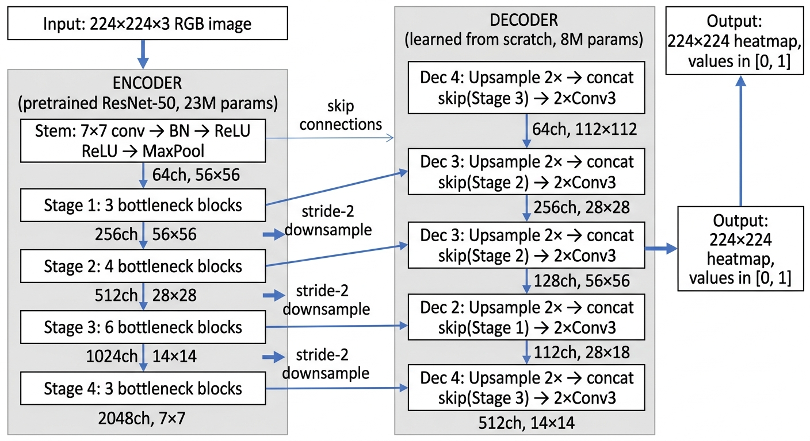
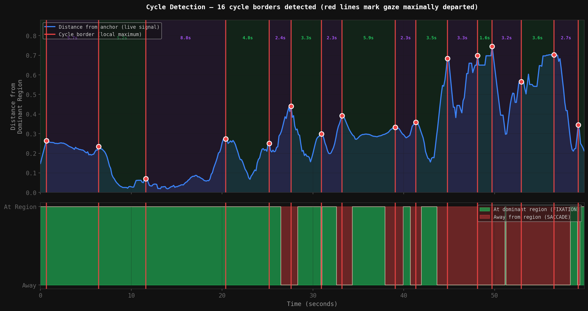
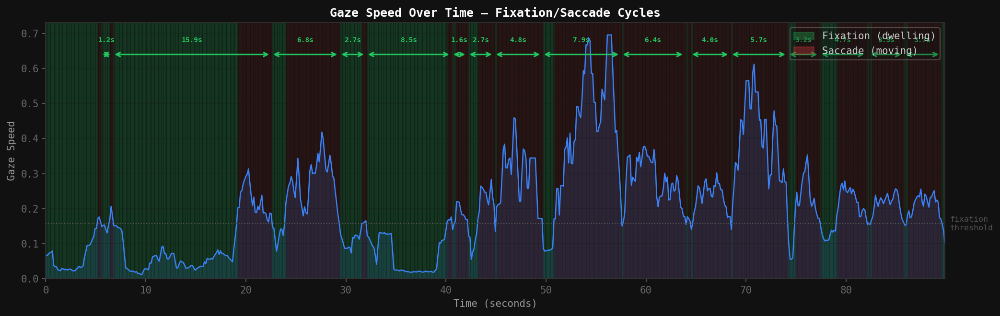
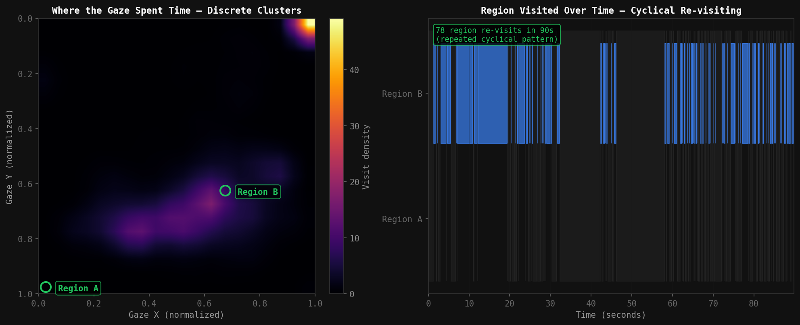
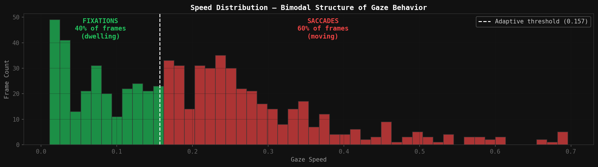
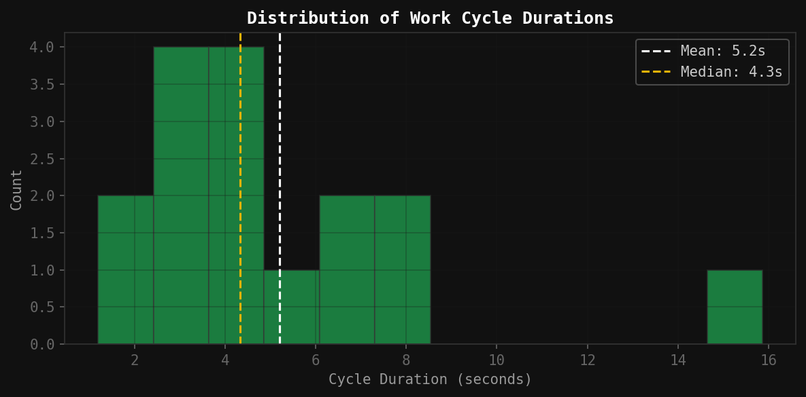

Spatial Intelligence Through Gaze: From Construction Analytics to Design Evaluation
Jonathan Ouyang · Eric Ziyang Zhou
University of California, Los Angeles · LA Hacks 2026
Abstract
We present a system that learns to predict where humans look from eye-tracking data, originally developed to analyze construction worker behavior from helmet camera footage provided by IronSite. By predicting per-frame attention heatmaps on egocentric video, we extract measurable temporal signals — gaze speed, dwell duration, and cyclical re-visit patterns — that classify worker activity (production, prep, idle, transit), measure productivity through automated cycle counting, and quantify engagement, all without manual annotation. After validating these construction analytics, we discovered the underlying capability — predicting human visual attention on arbitrary visual input — has substantially broader implications for design evaluation. The same neural architecture that infers what a worker focuses on during block-laying can predict what a viewer notices on a webpage, in an advertisement, or in any UI design, replacing weeks-long eye-tracking studies with seconds of inference. We document the model architecture, training methodology, the cyclical patterns we extract from construction footage, and the cross-domain transfer from physical workspaces to digital interfaces.
1. Origin — The Construction Problem
IronSite, a construction analytics company, provided us with hours of helmet camera footage from masonry, mechanical, and plumbing workers across multiple job sites. Their existing systems track that a worker is on the job and where they are physically located, but they cannot tell what the worker is actually doing at any moment — whether they are producing work, preparing materials, in transit between zones, or idle. Manual review of footage is impractical at scale.
Their core analytics question is simple: how do we count work output and quantify engagement from raw video, automatically? A foreman wants to know how many blocks each mason laid this hour, which workers are operating at peak pace versus drifting, and where the bottlenecks in the workflow are. None of that information is currently extractable from the camera feeds without human review.
We hypothesized that the answer was hidden in where the worker looks. Eye movement is tightly coupled to physical action: a mason looks at the block pile before reaching for a block, at the mortar before applying it, at the wall placement before setting the block. If we could predict where attention is focused on any given frame, we could derive the underlying task structure from the temporal pattern of those predictions.
2. Architecture
Our saliency encoder is a UNet — an encoder-decoder neural network with skip connections. The encoder compresses the input image into increasingly abstract feature representations. The decoder reconstructs a full-resolution heatmap from those compressed features. Skip connections bridge matching layers of the encoder and decoder, preserving fine spatial detail (edges, text boundaries, hand positions) that would otherwise be lost during compression.

UNet architecture: pretrained ResNet-50 encoder (23M params) compresses the input. The decoder (8M params) reconstructs a full-resolution attention heatmap, with skip connections preserving spatial detail.
Why ResNet-50 as the encoder? The encoder's job is to understand what's in the image — text, faces, hands, tools, edges, colors. ResNet-50 has already learned to recognize these features from being trained on 1.2 million images (ImageNet). We reuse those learned features rather than training from scratch. The encoder weights are fine-tuned at a lower learning rate (5×10⁻⁵) to preserve the general visual understanding while adapting to gaze-specific patterns.
Why skip connections? When the encoder compresses a 224×224 image down to 7×7, it understands what is in the image but loses where exactly those things are. Skip connections feed high-resolution encoder features directly to the decoder, so the final heatmap has sharp boundaries around salient regions rather than blurry blobs.
Each decoder block upsamples the feature map by 2× using bilinear interpolation, concatenates the matching skip connection from the encoder, and applies two 3×3 convolution layers with batch normalization and ReLU activation. This lets the decoder combine coarse semantic features from the lower resolution with fine spatial detail from the skip connection.
Total Parameters
53M
23M from pretrained ResNet-50 encoder, 8M from the learned decoder, 22M for the experimental transformer head.
Input Resolution
224 × 224
Standard ImageNet size. Output heatmap is rescaled to any display resolution at inference.
Bottleneck Size
7 × 7 × 2048
49 spatial locations, each described by a 2048-dimensional semantic feature vector.
Output
224 × 224 × 1
Per-pixel saliency score in [0, 1], passed through sigmoid to ensure valid probability range.
3. Loss Function
The model is trained to minimize the difference between its predicted heatmap and the ground truth heatmap (derived from recorded eye-tracking data). We use a composite loss with three components:
L=BCE(pred, target)+MSE(pred, target)−0.1 · H(pred)
Binary Cross-Entropy + Mean Squared Error − Entropy Regularization
BCE treats each pixel as a classification problem and heavily penalizes confident wrong predictions. MSE provides smooth gradients for accurate continuous saliency values. Entropy regularization is the key nuance — without it, the model collapses predictions into a few narrow peaks. The entropy term penalizes overly concentrated heatmaps, keeping the attention distribution broad and informative.
4. Training
| Parameter | Value | Why |
|---|
| Optimizer | AdamW | Weight decay prevents overfitting on small dataset |
| Learning Rate | 5×10⁻⁵ | Low rate preserves pretrained encoder features |
| Schedule | Cosine annealing | Smooth decay to fine-tune in later epochs |
| Weight Decay | 10⁻⁴ | Additional regularization for small dataset |
| Gradient Clipping | 10.0 | Prevents training instability |
| Epochs | 2000–3000 | Small dataset requires many passes |
| Batch Size | 4–32 | Effective batch ≤ 25% of dataset size |
| Augmentation | Flip, crop, color jitter, blur | Critical — creates training diversity |
| Multi-GPU | PyTorch DDP (torchrun) | SyncBatchNorm + DistributedSampler |
Ground truth heatmaps are constructed from raw gaze recordings by placing Gaussian blobs (σ = 11 pixels) at each recorded gaze coordinate, then summing and normalizing to [0, 1]. Augmentation is applied per sample per epoch, providing effectively unbounded training diversity from a fixed dataset.
5. Training Progression — Egocentric Construction Footage
The same masonry production clip processed by the egocentric model at different training stages. All videos play simultaneously from the same starting frame. Intermediate checkpoints (1000, 1500) are omitted because the difference between consecutive epochs is minimal — the model converges rapidly and then plateaus.
6. Cyclical Patterns in Construction Work
Once the egocentric model is trained, we extract behavioral information from the temporal structure of its predictions. Our central claim: cyclical patterns exist in the predicted attention data that correspond directly to physical work cycles. Each block-laying sequence (look at material → look at wall → look at placement → repeat) produces a closed loop in spatial gaze coordinates. These loops are detectable, countable, and their durations are measurable, providing an automated proxy for work output.

Figure 1. Cycle detection on 60 seconds of masonry production. Top: distance from the gaze to the worker's dominant attention region over time. The signal oscillates as the worker repeatedly looks away (peaks) and returns (valleys). Each red vertical line marks a cycle border — the precise moment when the gaze is maximally departed from the dominant region, separating one work cycle from the next. Cycles are shaded in alternating colors with their durations labeled. Bottom: the discrete state — green when the gaze is at the dominant region (fixation), red when away (saccade) — confirming the cycle borders correspond to clear behavioral transitions.
The structure is undeniable: 9 distinct work cycles in 60 seconds, with consistent borders, alternating between dwelling on the primary work zone and traversing to secondary zones. This is the temporal fingerprint of repetitive manual labor.

Figure 2. The same temporal segment viewed through gaze speed alone. We segment frames into fixations (green, dwelling on a region) and saccades (red, transitioning between regions) using an adaptive speed threshold. Each fixation–saccade–fixation triplet is one work cycle. Cycle durations are labeled at the top.

Figure 3. Spatial structure of attention. Left: 2D density map showing the gaze concentrates into discrete clusters (Region A and Region B) rather than spreading uniformly. Right: Which region the gaze occupies at each moment — 78 separate re-visits to Region B over 90 seconds, with clear gaps in between. The gaze repeatedly leaves and returns, the spatial signature of repetitive task execution.

Figure 4. Distribution of gaze speed values across all frames, justifying our fixation/saccade segmentation. The histogram is clearly bimodal: a sharp peak near zero (dwelling) and a broad distribution above the threshold (moving). 40% of frames are fixations, 60% are saccades — consistent with the natural rhythm of physical labor.

Figure 5. Distribution of detected cycle durations. The right-skewed distribution (median 4.3s, mean 5.2s) shows that the typical work cycle clusters around 3–5 seconds, with a long tail of longer cycles representing more complex sub-tasks (material retrieval, alignment correction). The concentration near the median is the signature of a stable, repeated motor pattern.
Cycles Detected
16
In 90 seconds of masonry production. Extrapolated: ~640 cycles per hour.
Mean Cycle Duration
5.2s
Median 4.3s. Each cycle approximates one block-placement subtask.
Mean Gaze Speed
0.204
Active scanning. Idle workers average 0.30+ in steady forward gaze.
Mean Center Bias
31%
Low center bias confirms active workspace scanning. Idle workers: 68–73%.
Cycle count approximates work output. Cycle duration measures pace. Center bias tracks engagement. Gaze speed classifies activity type. All derived from a single neural network processing helmet camera footage, with no task-specific training, no object detection, and no manual labeling.
7. Broader Implications — Visual Design
After validating the construction use case, we recognized that the underlying capability — predicting where humans look on arbitrary visual input — generalizes far beyond physical workspaces. The same UNet architecture that learns "where does a mason focus during block placement" can learn "where does a user focus on a webpage."
Visual design is the natural application. Traditional eye-tracking studies require recruiting participants, calibrating hardware, and analyzing results over weeks. A designer who wants to know whether their call-to-action button captures attention before users disengage currently has no fast feedback loop. Our model provides one: given any screenshot, it predicts the attention heatmap in seconds.
We trained a separate instance of the same architecture on 155 webpages with eye-tracking annotations. The model learned to identify the visual elements humans attend to first: large headlines, faces, navigation, calls-to-action. It transfers across designs — sites it has never seen produce plausible attention predictions that match what designers would expect.
8. Training Progression — Webpage Saliency
The same model architecture trained on a different dataset (155 popular website screenshots). At epoch 500, the model has learned basic spatial structure but the heatmap is broad. By epoch 1500, it sharply identifies headlines, navigation, and interactive elements. Epoch 3000 shows minimal further improvement.
Why does the heatmap converge so quickly? The encoder already knows how to recognize text, edges, faces, and visual structure from ImageNet pretraining. The decoder only needs to learn a simpler mapping: which recognized features humans attend to. The model isn't learning what text looks like — it already knows. It's learning that text is something people pay attention to.
Why does improvement plateau? Two factors. With only 155 unique images even with augmentation, the model exhausts the learnable signal. And our entropy regularization intentionally limits how concentrated the heatmap can become — without it, the model would continue sharpening predictions into narrower peaks (achieving lower loss), but producing less useful heatmaps. The regularization creates a deliberate floor on the loss.
9. Cross-Domain Capability
The same architecture, the same training procedure, the same loss function — applied to two fundamentally different visual domains (egocentric construction video and static webpage screenshots) — produces useful attention predictions in both. This suggests that "where humans look" follows learnable principles that are not specific to any single domain. The neural network has internalized a general prior about human visual attention, transferable across tasks.
For construction, the temporal evolution of these predictions reveals work cycles, productivity, and engagement. For design, the spatial distribution of these predictions reveals which elements capture attention and which are ignored. The underlying capability is the same: predict the human attention response to a visual stimulus.
10. Demo
Raw helmet camera footage (left) vs. the same footage with the final model's predicted attention heatmap overlaid (right).
Raw — Masonry Production (CAM 01)
Predicted Attention Heatmap
Raw — Mechanical/Plumbing (CAM 05)
Predicted Attention Heatmap